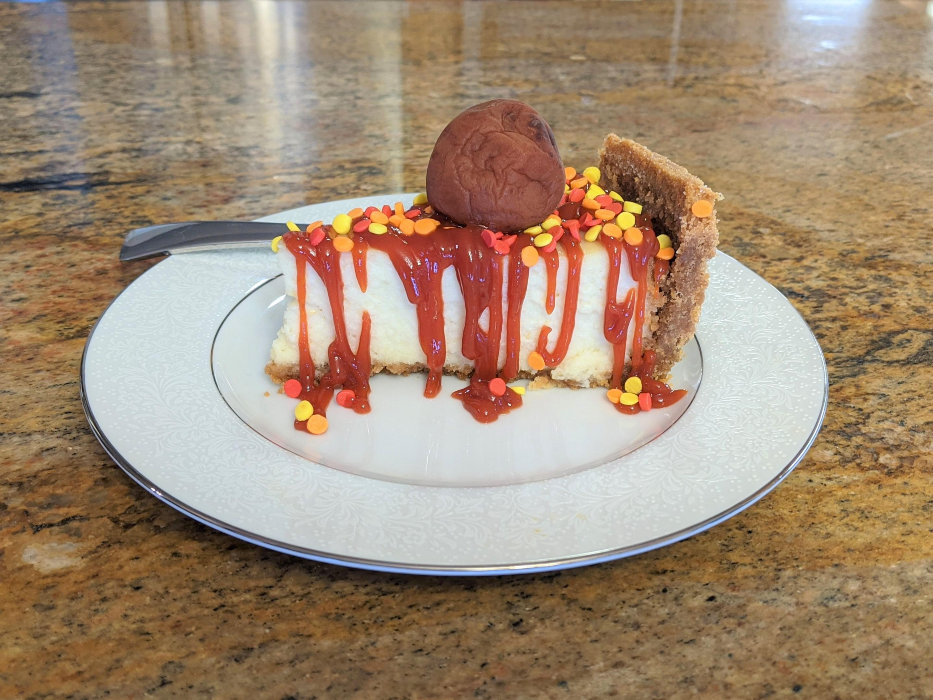

Mitama Chessecake

Description
The following recipe is a reimagination of cheesecake made by the character Mitama from magia record animation seriees.
Ingredients
- 1 slice of supermarket cheesecake
- Ketchup
- Sprinkles
- Japanese Sour plum
Steps
- Place the cheesecake on a plate
- Pour Ketchup in a zig zag pattern onto the cheesecake
- Shower some Sprinkles on the cheesecake
- Put the sour plum on top and enjoy
Back to Homepage